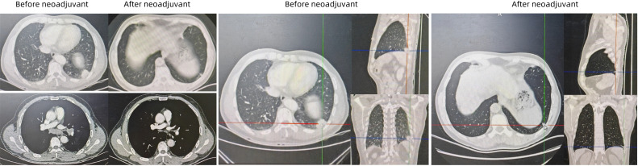
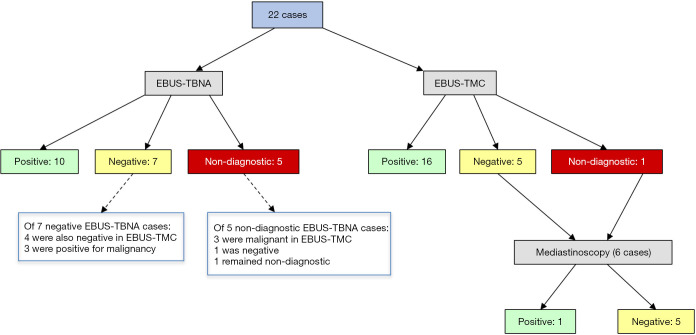
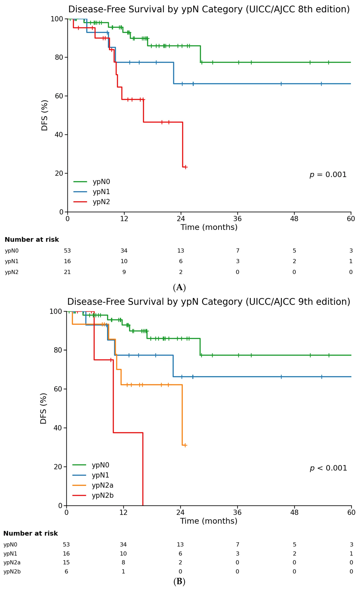
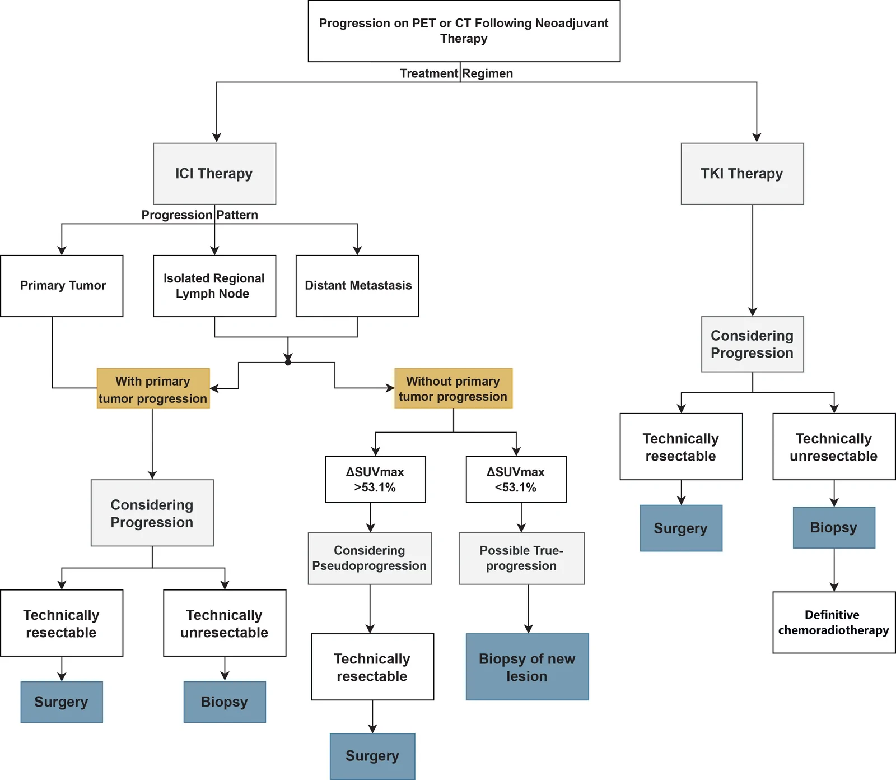
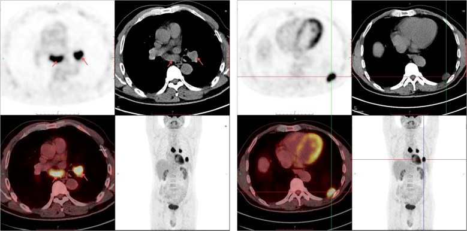
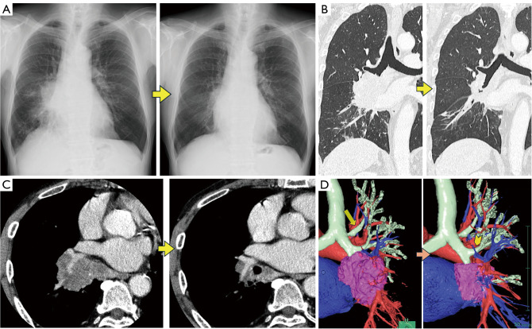

046 — Tái phân giai đoạn trung thất sau hóa–miễn dịch & bệnh hạch tồn dư (ypN) / Mediastinal restaging and residual nodal disease after neoadjuvant chemo-immunotherapy
Tags: pattern:hach pattern:tai-phat vung:trung-that score:IASLC score:RECIST protocol:PET-CT protocol:EBUS-TBNA
Mức chắc chắn (certainty): tổng hợp y văn (literature synthesis) — tổng hợp 4 nghiên cứu mở 2025–2026 (Europe PMC: Ariza-Prota et al. Mediastinum 2025, PMC12260948; Mosleh et al. Cancers 2026, PMC13564668; Pan et al. ESMO Open 2026, PMC13573743; Bader et al. JTCVS Open 2026, PMC13477020) + 2 ca nguyên văn dùng làm hình (PMC12893989, PMC13351936); số liệu giữ đúng nguồn, chỗ chưa kiểm chứng ghi "chưa rõ".
1. Tổng quan bệnh học – cơ chế hình ảnh
- Vì sao phải tái phân giai đoạn trung thất (mediastinal restaging): ở NSCLC giai đoạn III, hạch trung thất còn sống sau điều trị tân bổ trợ quyết định ba việc: (a) còn mổ triệt để được không, (b) có cần thêm điều trị toàn thân, (c) tiên lượng. Sau hóa–miễn dịch tân bổ trợ (neoadjuvant chemo-immunotherapy), tỷ lệ đáp ứng mô bệnh rất cao nhưng đáp ứng của u nguyên phát KHÔNG đồng nghĩa với xóa sạch hạch — hai ổ này đáp ứng lệch nhau (Mosleh et al. 2026; Bader et al. 2026).
- Định nghĩa mô bệnh chuẩn (IASLC), dùng để "đọc" kết quả sau mổ:
- MPR (major pathologic response): ≤ 10% tế bào u còn sống (residual viable tumor, RVT) trong u nguyên phát.
- pCR (pathologic complete response): 0% RVT ở cả u nguyên phát và hạch.
- Hệ quả thực hành: một u teo gần hết trên CT vẫn có thể kèm hạch còn 20–30% u sống; ngược lại u còn ổ đặc nhưng hạch đã sạch.
- Vì sao tái phân giai đoạn sau hóa–miễn dịch KHÓ hơn trước điều trị (vật lý + mô bệnh):
- Điều trị gây xơ hóa (fibrosis), hyalin hóa, hoại tử → hạch giảm mật độ tế bào, tăng chất nền collagen. Collagen nghèo tế bào nên kim chọc hút (cytology) chỉ lấy được chất xơ + máu, không đủ tế bào để kết luận.
- Trong 22 bệnh nhân được làm cả hai kỹ thuật trên cùng một hạch (Ariza-Prota et al. 2025): EBUS-TBNA độ nhạy 63,63%, không chẩn đoán được 22,7% (5/22), mẫu đủ cho hóa mô miễn dịch/phân tử chỉ 29,41%; EBUS-TMC (cryobiopsy trung thất) độ nhạy 95,45%, không chẩn đoán 4,5% (1/22), mẫu đủ 94,11% (p = 0,03 cho độ nhạy). Cryobiopsy lấy mảnh mô nguyên khối nên nhìn được kiến trúc và vùng xơ – u sống xen kẽ.
- Vì sao FDG-PET không đủ một mình: tế bào viêm/đại thực bào sau miễn dịch cũng bắt FDG mạnh (dương tính giả), còn vi di căn trong hạch nhỏ hoặc hạch đã xơ thì dưới ngưỡng phát hiện (âm tính giả). Trong 283 bệnh nhân của Pan et al. 2026, 25,1% (71/283) đạt tiêu chuẩn PMD (progressive metabolic disease) theo EORTC nhưng 54,9% trong số đó vẫn đạt MPR khi mổ.
- Ngưỡng định lượng phải nhớ (cửa 1 của Argon):
- Kích thước hạch chọn để chọc lại: hạch trục ngắn > 5 mm và tới được bằng EBUS, hoặc còn bắt FDG sau điều trị (tiêu chuẩn chọn trong Ariza-Prota et al. 2025). Trong nghiên cứu này, trục ngắn trung bình giảm 21,31 ± 4,89 mm → 13,31 ± 4,93 mm, SUVmax 6,7 ± 2,47 → 3,99 ± 2,67, với ngưỡng SUV 2,5 phân biệt hạch lành/ác của đơn vị.
- Khoảng thời gian chuẩn: PET/CT sau điều trị cách đợt cuối 34,77 ± 6,26 ngày; EBUS cách PET 8,59 ± 1,7 ngày; mổ cách kết thúc điều trị trung vị 5,6 tuần (IQR 4,0–6,7).
- Tỷ lệ hạch tồn dư và tiên lượng (Mosleh et al. 2026, 90 bệnh nhân cN+): ypN0 58,9%, ypN1 17,8%, ypN2 23,3%; theo ấn bản 9: ypN2a (1 trạm) 16,7% và ypN2b (nhiều trạm) 6,7%.
- DFS trung vị theo ypN: ypN0 chưa đạt; ypN1 64,8 tháng; ypN2 16,1 tháng (log-rank p = 0,001). Tách ấn bản 9: ypN2a 24,4 tháng vs ypN2b 9,9 tháng (p < 0,001) — nhưng nhóm ypN2b chỉ 6 ca nên mang tính thăm dò.
- Phân tầng tích hợp (đáp ứng mô bệnh + hạch): nhóm nguy cơ thấp (ypN0 + pCR/MPR) có DFS 1 năm 94,5%, 2 năm 86,1%; nhóm cao (ypN2, hoặc ypN1 không đáp ứng) 1 năm 68,0%, 2 năm 54,6%; mỗi bậc nguy cơ HR 2,14 (95% CI 1,23–3,71).
- Yếu tố dự báo hạch trung thất còn u: cN2 lúc chẩn đoán → OR 4,90 (1,02–23,66); mỗi 10% PD-L1 tăng → OR 0,83 (0,71–0,98) cho ypN2.
- Giả tiến triển (pseudoprogression) — con số quyết định: 26/283 (9,2%) bệnh nhân đạt RECIST 1.1 = PD sau hóa–miễn dịch nhưng 65,4% (17/26) đạt MPR, trong đó 53,8% (14/26) đạt pCR, và tất cả 26 ca vẫn mổ R0. Ngưỡng phân biệt trên PET: ΔSUVmax giảm ≥ 53,1% cho AUC 0,865, tốt hơn nhiều so với Δ đường kính u (AUC 0,727).
2. Mẫu hình + chẩn đoán phân biệt theo vị trí (gamut)
Câu hỏi thực hành: trên CT/PET sau hóa–miễn dịch, một hạch còn to / còn bắt FDG — đó là u sống, xơ chết, viêm do miễn dịch, hay nhiễm trùng? Gamut xếp theo hình thái và vị trí trạm:
- Theo hình thái:
- Hạch to, đậm độ mềm, bắt thuốc đồng nhất, còn FDG → nghĩ di căn tồn dư (ypN+) — nhất là khi u nguyên phát cũng chưa sạch.
- Hạch nhỏ lại nhưng còn "nhân" đậm độ cao, vôi hóa, không bắt FDG → nghĩ xơ/hyalin hóa sau điều trị (hạch chết) — chốt bằng mô học nếu còn nghi.
- Hạch mới, đối xứng hai rốn phổi + trung thất, bắt FDG mạnh, không hoại tử ở bệnh nhân đang/đã dùng ức chế điểm kiểm soát miễn dịch → nghĩ phản ứng dạng sarcoid (sarcoid-like reaction) — không phải tiến triển.
- Hạch hoại tử trung tâm, bờ dày, ± khí ở bệnh nhân suy giảm miễn dịch/điều trị corticoid → nghĩ lao/nấm.
- Hạch rốn phổi một bên, rất đậm, không bắt thuốc, có vôi hóa → nghĩ hạch anthracotic/silicotic (đã có ca mô phỏng ác tính trên FDG-PET/CT) — bẫy chọc nhầm.
- Theo vị trí trạm (quyết định ngả lấy mô):
- Trạm 4R, 4L, 7, 2R: EBUS-TBNA với tới trực tiếp (trong nghiên cứu restaging: 4R 40,9%, 4L 18,2%, 7 22,7%, 2R 18,2%).
- Trạm 5, 6, 8, 9: EBUS không tới — phải EUS-B hoặc trung thất soi/ngực thuật; bỏ qua nhóm này là nguồn âm tính giả hệ thống.
- Trạm 10–14: đánh giá cùng lúc khi mổ (nạo hạch hệ thống) — không thay thế bằng chọc trung thất.
- Theo bối cảnh lâm sàng: sốt/ho đờm → nhiễm trùng; bệnh tự miễn/sarcoidosis trước đó → u hạt; u lympho (hạch nhiều trạm, không hoại tử, đáp ứng kém) cần cryobiopsy/mô lớn — TBNA có độ nhạy thấp cho lymphoma (xem bài 018/044).
3. Bảng so sánh phân biệt (ma trận đối chiếu)
| Thực thể (entity) | Hình ảnh điển hình (CT/PET sau hóa–miễn dịch) | Chốt vào (rule-in) | Chốt loại (rule-out) | Gợi ý xác nhận |
|---|---|---|---|---|
| Di căn hạch tồn dư (ypN+) | Hạch còn trục ngắn > 5 mm, bắt thuốc, FDG còn; thường không đối xứng, cùng bên u | FDG còn ở đúng trạm đã dương tính ban đầu + hạch không teo rõ | Hạch vôi hóa hoàn toàn, không bắt FDG và đã teo rõ → ít nghĩ u sống | EBUS-TBNA 3 lần/trạm ± TMC; mô học + IHC |
| Xơ – hyalin hóa sau điều trị (hạch chết) | Hạch teo, đậm độ cao, bờ rõ, có dải xơ, không/ít bắt FDG | Teo rõ + không bắt FDG + u nguyên phát đáp ứng tốt | Còn nhân mềm bắt thuốc trong hạch xơ → không loại trừ u sống | Chọc lại nếu còn FDG; theo dõi CT 3–6 tháng |
| Phản ứng dạng sarcoid do ICI | Hạch hai bên, đối xứng, rốn phổi + trung thất, bắt FDG mạnh, không hoại tử; có thể kèm nốt phổi | Đối xứng hai bên + bối cảnh ức chế miễn dịch + không có tổn thương ngoài lồng ngực mới | Một bên, hoại tử, xâm lấn → không nghĩ sarcoid-like | Mô học: u hạt không hoại tử; không tự ý đổi phác đồ |
| Giả tiến triển (pseudoprogression) | To lên hoặc tổn thương mới trên CT nhưng giảm chuyển hóa; bệnh nhân vẫn khỏe | ΔSUVmax giảm ≥ 53,1% dù đường kính tăng | Tăng cả kích thước và SUVmax, kèm tổn thương ngoài lồng ngực thật | PET/CT định lượng; không hủy mổ chỉ vì CT to lên |
| Tiến triển thật (true progression) | Tổn thương mới ngoài lồng ngực, hạch mới ở trạm xa, tràn dịch màng phổi mới, SUVmax tăng | Tổn thương mới ngoài trường chiếu + tăng cả kích thước và chuyển hóa | Chỉ một hạch to lên đơn độc mà chuyển hóa giảm → nghĩ giả tiến triển | Sinh thiết tổn thương mới; hội chẩn đa chuyên khoa |
| Nhiễm trùng cơ hội (lao/nấm) | Hạch hoại tử trung tâm, bờ dày, ± khí; đông đặc quanh; sốt | Sốt + hoại tử trung tâm + bạch cầu/CRP tăng | Hạch đặc, không hoại tử, không sốt → ít nghĩ nhiễm | AFB/PCR, nấm; tránh tăng ức chế miễn dịch |
| Hạch anthracotic/silicotic | Hạch rất đậm, vôi hóa, rốn phổi một bên, FDG dương tính giả | Đậm độ cao + vôi hóa + không lớn thêm | Bắt FDG mạnh, mềm, lớn nhanh → không phải hạch lành | So phim cũ; mô học nếu vẫn nghi |

Bốn lát cắt đối chiếu trước (Before neoadjuvant) và sau (After neoadjuvant) ở cùng bệnh nhân: khối mô mềm rốn phổi/đáy phổi trái giảm thể tích, nhưng hạch trung thất vẫn còn thấy — đúng lý do phải đánh giá hạch riêng, không suy ra từ u nguyên phát. Nguồn: Wang et al., Front Oncol 2026 (PMC12893989), CC BY 4.0, giữ nguyên bản.Ba bẫy định lượng hay gặp khi "đọc" hạch sau điều trị
- Kích thước không phải sinh học: hạch có thể teo do xơ dù còn đảo u sống, và có thể to do viêm dù đã sạch u. Ngưỡng > 5 mm trục ngắn chỉ dùng để chọn hạch cần chọc, không dùng để chẩn đoán.
- SUVmax là giá trị cực đại, không phải thể tích u sống: một ổ viêm nhỏ có thể cho SUVmax cao hơn cả khối u. Vì vậy phải đọc kèm hình thái, phân bố, đối xứng và ΔSUVmax.
- Đáp ứng lệch giữa u và hạch: trong cùng một bệnh nhân, u nguyên phát đạt pCR vẫn có thể còn ypN2; 43% bệnh nhân có đáp ứng hình ảnh khách quan (ORR) vẫn không đạt MPR trên mô học (Bader et al. 2026).
4. Protocol chụp + hệ phân độ/điểm chuẩn hóa
Protocol tái phân giai đoạn (theo 3 nghiên cứu đã đọc):
- CT ngực có cản quang (lát ≤ 1,25 mm, dựng MPR) ± PET/CT toàn thân sau đợt cuối 2–4 tuần (trung vị 34,8 ngày trong nghiên cứu); đọc cùng phim trước điều trị trên cùng mặt cắt.
- Chọn hạch để lấy mô: (a) mọi trạm đã dương tính ban đầu, (b) hạch còn FDG, (c) hạch trục ngắn > 5 mm và tới được bằng EBUS.
- EBUS-TBNA: kim 22 G, 3 lần/trạm, ROSE nếu có; lấy thêm mẫu cho PD-L1/EGFR/ALK (sau miễn dịch mẫu cytology thường không đủ: chỉ 29,41%).
- Nếu TBNA âm/không chẩn đoán mà nghi cao: EBUS-TMC (probe 1,1 mm, làm lạnh 3–5 giây, 3 mảnh) ngay trong cùng thì, hoặc trung thất soi. Trong 22 ca, TMC phát hiện thêm 6 ca ác tính mà TBNA bỏ sót.
- Khi mổ: nạo hạch hệ thống ≥ 3 trạm N2 + ≥ 1 trạm N1 (trung vị 11 hạch, 7 N2); ghi số hạch dương/tổng số và tỷ lệ hạch dương (LNR) — LNR trung vị 0,17 (ypN1 0,13; ypN2 0,20).
- Hệ phân độ dùng để báo cáo:
- RECIST 1.1: PR = giảm ≥ 30% tổng đường kính; PD = tăng ≥ 20% và tăng tuyệt đối ≥ 5 mm, hoặc tổn thương mới.
- EORTC (PET): PMR = giảm ≥ 25% SUV; PMD = tăng ≥ 25% SUV hoặc tổn thương mới; SMD = thay đổi < 25% tăng / < 15% giảm.
- UICC/AJCC ấn bản 9: ypN2a (1 trạm) vs ypN2b (nhiều trạm) — dùng cho báo cáo sau mổ và phân tầng nguy cơ, không dùng để quyết định mổ trước mổ.
- MPR ≤ 10% RVT (u nguyên phát); pCR = 0% RVT (u + hạch).

22 bệnh nhân được làm cả EBUS-TBNA và EBUS-TMC trên cùng hạch: TBNA dương 10, âm 7, không chẩn đoán 5; TMC dương 16, âm 5, không chẩn đoán 1; 6 ca được trung thất soi xác nhận, TMC bỏ sót 1 ca (âm tính giả). Nguồn: Ariza-Prota et al., Mediastinum 2025 (PMC12260948), CC BY-NC-ND 4.0, giữ nguyên bản.flowchart TD
A[Kết thúc hóa-miễn dịch: CT ngực + PET/CT] --> B{Còn hạch FDG hoặc trục ngắn trên 5 mm?}
B -->|Không| C[Mổ theo kế hoạch + nạo hạch hệ thống]
B -->|Có| D[EBUS-TBNA 22G ba lần mỗi trạm + ROSE]
D --> E{Kết quả mô học?}
E -->|Ác tính| F[ypN dự kiến dương: hội chẩn đa chuyên khoa]
E -->|Lành tính hoặc không chẩn đoán| G[EBUS-TMC hoặc trung thất soi]
G --> H{Xác nhận?}
H -->|ypN0| C
H -->|ypN dương| F
F --> I[Quyết định mổ hay điều trị toàn thân tiếp]
Đọc kết quả sau mổ — bảng phân tầng dùng ngay trong hội chẩn:
| Nhóm sau mổ | Định nghĩa | DFS 1 năm | DFS 2 năm |
|---|---|---|---|
| Nguy cơ thấp | ypN0 + pCR hoặc MPR | 94,5% | 86,1% |
| Nguy cơ trung gian | ypN0 không đáp ứng, hoặc ypN1 + MPR | 78,8% | 78,8% |
| Nguy cơ cao | ypN2 bất kỳ, hoặc ypN1 không đáp ứng | 68,0% | 54,6% |

Đường cong DFS theo ypN: (A) ấn bản 8 — ypN0 chưa đạt trung vị, ypN1 64,8 tháng, ypN2 16,1 tháng; (B) ấn bản 9 tách ypN2a 24,4 tháng vs ypN2b 9,9 tháng. Số ca ypN2b chỉ 6 → đọc thăm dò. Nguồn: Mosleh et al., Cancers 2026 (PMC13564668), CC BY 4.0.5. Biến thể bình thường và cạm bẫy
- "Hạch còn thấy" không bằng "hạch còn u": sau điều trị, mô xơ thay thế hạch vẫn tạo bóng mờ trên CT; đừng tự động nâng giai đoạn. Ngược lại, hạch teo nhỏ < 5 mm vẫn có thể chứa vi di căn — không loại trừ.
- FDG dương tính giả sau miễn dịch: viêm do ức chế điểm kiểm soát, sarcoid-like reaction, nhiễm trùng, xơ viêm phóng xạ; SUVmax tăng đơn độc không đủ hủy mổ.
- FDG âm tính giả: hạch < 1 cm, hoại tử/nhầy, tăng đường huyết, dùng corticoid, hoặc sau xạ; ngưỡng phân giải không gian của PET chưa kiểm chứng đủ để loại trừ vi di căn.
- Bỏ sót trạm 5–6: EBUS không tới; nếu chỉ chọc 4R/7 rồi kết luận "trung thất sạch" là âm tính giả do chọn mẫu.
- Chỉ đọc u, bỏ đọc hạch (satisfaction of search): u teo đẹp dễ làm người đọc bỏ qua hạch còn FDG; luôn đọc theo trạm, so từng trạm với phim cũ.
- Cạm bẫy mặt cắt: trên CT không cản quang, hạch cạnh thực quản/khí quản dễ bị nhầm với thực quản co thắt hoặc tĩnh mạch giãn; luôn dùng cản quang + MPR, đối chiếu PET và theo dõi liên tục theo trục để phân biệt.
- Giả tiến triển: 9,2% bệnh nhân đạt RECIST PD nhưng 65,4% vẫn MPR — hủy mổ chỉ vì "to lên" là sai lầm có thể bỏ mất cơ hội chữa khỏi.

Nhánh quan trọng: tiến triển không kèm u nguyên phát to lên → dùng ΔSUVmax: giảm ≥ 53,1% nghiêng giả tiến triển (tiếp tục mổ nếu mổ được); giảm < 53,1% nghiêng tiến triển thật → sinh thiết tổn thương mới. Với TKI, "tiến triển" mà còn mổ được thì vẫn mổ. Nguồn: Pan et al., ESMO Open 2026 (PMC13573743), CC BY-NC-ND 4.0, giữ nguyên bản.- Phản biện nguồn: các tỷ lệ trên đến từ nghiên cứu đơn trung tâm, cỡ mẫu 22–283, không phải thử nghiệm ngẫu nhiên; ypN2b chỉ 6 ca nên không dùng con số 9,9 tháng để tiên lượng cá nhân.
6. Tự lượng giá — Blind Quiz
Ca 1 — Nam 64 tuổi, tình cờ thấy bóng mờ rốn phổi trái; PET/CT dưới đây trước điều trị. Hạch nào dương tính, và điều đó đổi giai đoạn thế nào?

- Gợi ý lâm sàng: không hút thuốc, ECOG 0; EBUS-TBNA trạm 7 và 11L có tế bào ác tính; giải phẫu bệnh u: adenocarcinoma, PD-L1 40%.
- Câu hỏi: Mô tả phân bố FDG? Đây là N1, N2 hay N3? Vì sao phải chọc lại trạm 7 sau điều trị dù u đã nhỏ?
Bấm để hiện đáp án (findings + chẩn đoán)
- Dấu hiệu: ổ bắt FDG mạnh ở khối thùy dưới trái + hạch rốn phổi/trung thất (mũi tên đỏ), tương ứng trạm 7 và 11L đã được EBUS xác nhận ác tính.
- Chẩn đoán: adenocarcinoma phổi trái, cT2aN2M0 — giai đoạn IIIA (ấn bản 8) → N2 cùng bên = chỉ định hóa–miễn dịch tân bổ trợ rồi đánh giá lại.
- Vì sao chọc lại trạm 7: trạm 7 là trạm N2 đã dương tính; u nguyên phát đáp ứng không chứng minh hạch sạch. Bệnh nhân này sau 3 chu kỳ nivolumab + nab-paclitaxel + carboplatin đạt PR theo RECIST 1.1 và pCR khi mổ — nhưng đó là kết quả sau mổ, không suy ra được từ CT.
- Nguồn ảnh: Wang et al., Front Oncol 2026, PMC12893989, CC BY 4.0.
Ca 2 — Nam 69 tuổi, khối 7,9 cm thùy dưới phải + hạch trạm 7; CT dưới đây là SAU hóa–miễn dịch. Có được mổ không?

- Gợi ý lâm sàng: ho ra máu nhẹ, không di căn xa; sau điều trị bệnh nhân vẫn khỏe, không khó thở.
- Câu hỏi: Mô tả thay đổi so với trước điều trị? Hạch trạm 7 teo nhỏ có đủ để kết luận ypN0? Cần làm gì trước khi mổ?
Bấm để hiện đáp án (findings + chẩn đoán)
- Dấu hiệu: khối rốn phổi/thùy dưới phải giảm rõ; hạch trạm 7 nhỏ hơn nhưng vẫn còn mô mềm cạnh khí quản; phế quản chính thông thoáng, không xẹp phổi.
- Chẩn đoán: đáp ứng hình ảnh một phần sau hóa–miễn dịch — đủ điều kiện xem xét mổ, nhưng teo hạch không đồng nghĩa ypN0.
- Việc cần làm: đánh giá lại trung thất bằng EBUS ở trạm 7 (và trạm đã dương tính ban đầu) nếu hạch > 5 mm hoặc còn FDG; nếu âm mà nghi ngờ → cryobiopsy/trung thất soi; khi mổ phải nạo hạch hệ thống ≥ 3 trạm N2.
- Nguồn ảnh: Kanno et al., Transl Lung Cancer Res 2026, PMC13351936, CC BY-NC-ND 4.0 (giữ nguyên bản).
Ca 3 — Bệnh nhân N2 sau 3 chu kỳ hóa–miễn dịch, PET/CT còn một hạch 4R bắt FDG. Bạn chọc TBNA 3 lần: kết quả "không có tế bào ác tính, chỉ có xơ". Làm gì tiếp?
- Câu hỏi: Ba lựa chọn (mổ luôn / chọc cryobiopsy cùng hạch / hủy mổ chuyển hóa–xạ) — chọn nào, dựa trên con số nào?
Bấm để hiện đáp án (findings + chẩn đoán)
- Chọn: cryobiopsy trung thất (EBUS-TMC) cùng hạch ngay trong thì đó — vì "không chẩn đoán" sau TBNA gặp tới 22,7% và độ nhạy TBNA chỉ 63,63% trong bối cảnh sau điều trị.
- Nếu không có cryo: trung thất soi — trong nghiên cứu, 6 ca được trung thất soi để xác nhận.
- Không hủy mổ chỉ vì PET còn dương: 25,1% bệnh nhân đạt PMD theo EORTC nhưng 54,9% trong số đó vẫn MPR; hủy mổ là mất cơ hội chữa khỏi.
- Ngưỡng dừng: có mô học kết luận (u sống hay xơ) + đủ mẫu cho PD-L1/phân tử; nếu vẫn không kết luận → mediastinoscopy.
- Nguồn số liệu: Ariza-Prota et al., Mediastinum 2025, PMC12260948; Pan et al., ESMO Open 2026, PMC13573743.
Bài liên quan chéo
- 001 – Tổng quan hệ Ngực
- 018 – EBUS-TBNA & EUS-B hạch trung thất
- 044 – Cryobiopsy trung thất qua EBUS
- 022 – Khối phổi & TNM
- 012 – Hạch trung thất IASLC
- 016 – Nốt phổi ở bệnh nhân có tiền sử ung thư
- 085 – Độc tính miễn dịch quanh mổ sau hóa–miễn dịch ung thư phổi
Ảnh
images/046_PET-hach-truoc-dieu-tri_PETCT_PMC12893989.jpg— CC BY 4.0.images/046_CT-truoc-sau-NACT_CT_PMC12893989.jpg— CC BY 4.0.images/046_hach-7-sau-NACT_CT_PMC13351936.jpg— CC BY-NC-ND 4.0, giữ nguyên bản.images/046_luu-do-EBUS-TBNA-vs-TMC_CT_PMC12260948.jpg— CC BY-NC-ND 4.0, giữ nguyên bản.images/046_luu-do-gia-tien-trien_CT_PMC13573743.webp— CC BY-NC-ND 4.0, giữ nguyên bản.images/046_DFS-theo-ypN_CT_PMC13564668.webp— CC BY 4.0.- Nguồn + giấy phép từng ảnh:
images/CREDITS.md; link gốc:sources.md.
Không dùng để chẩn đoán độc lập khi chưa có người hướng dẫn.